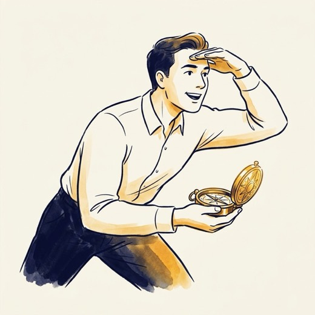
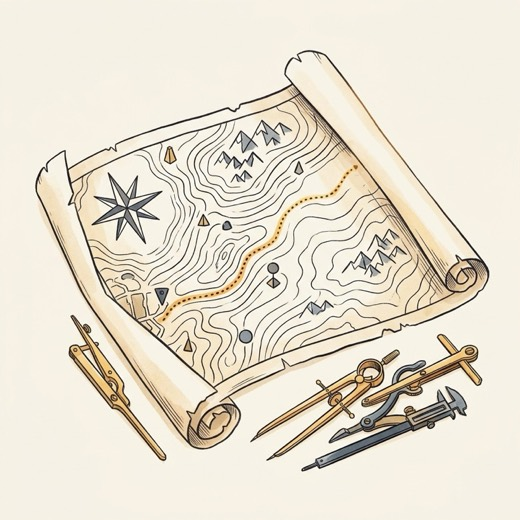
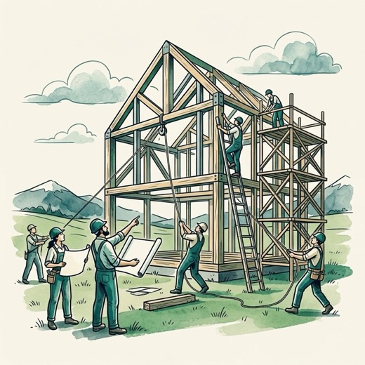
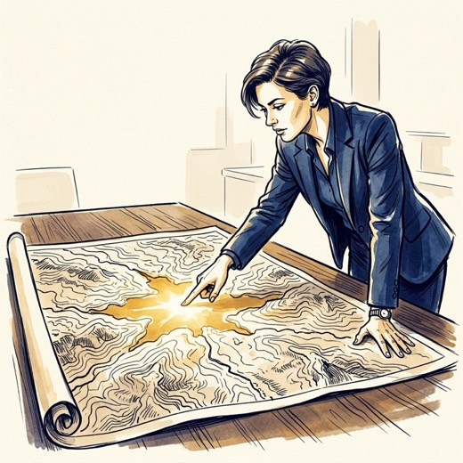
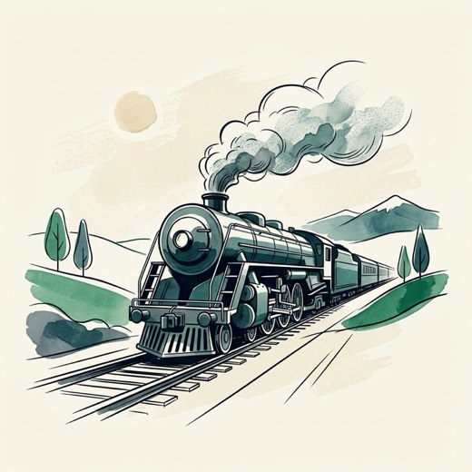
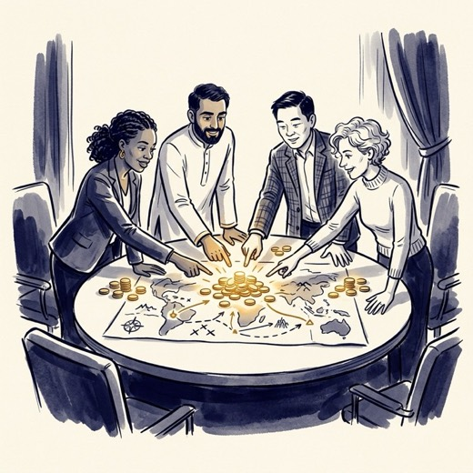
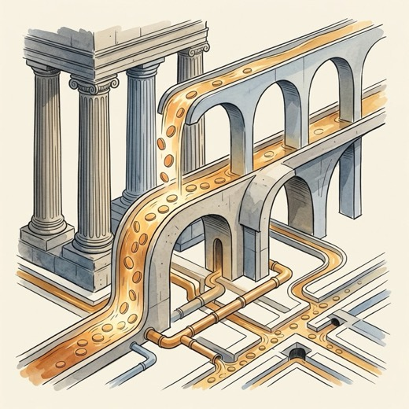
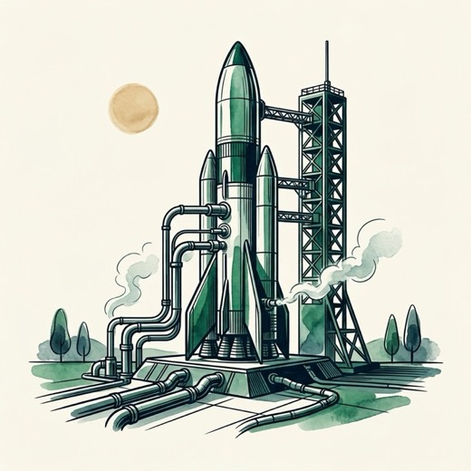

Owen conducts landscape interviews; Working Group surfaces questions. No pre-scoped project RFPs needed.
Debate & Map the Territory (Steps 1–2): Economists, practitioners, and funders agree on the core problems, levers, and a list of existing vs. missing ideas.
• Post-Event: Publish Shareable Briefing; funders act on their own.
• Room (22 Seats): 50% Economists & Practitioners, 50% Program Officers.
Finish Map + Scope 4–5 Builds (Steps 0–3): Dan & Owen arrive at Bellagio with 4–5 shovel-ready project blueprints, named practitioner builders, and budgets.
Project Deal Table (Step 4A): Put the 5 projects on the wall. Funder Champions step up to anchor specific projects, and peers jump on their Moving Train.
• Post-Event (Step 5A): Funders write direct checks to grantees; zero OAI fund ops.
• Room: 65% Active Grantmakers + 35% Named Project Builders.
Finish Steps 0–3 + pre-wire 2–3 Anchor Field Builders (e.g., Gates, Rockefeller, OpenAI Foundation) around a single $15M–$25M Fund prospectus.
Founding Fund Close (Step 4B): Anchors commit first capital into the shared pot; Fast-Followers join the table and align on fund governance.
• Post-Event (Steps 5B–6B): Stand up Fund (DHF/RenPhil); funders pay in; Dan & Owen run RFPs.
• Room: 80% Senior Principals & Lab Heads + Dan & Owen.
Dan & Owen finish the Field Map and scope 4–5 catalytic builds (`Steps 0–3`), while pre-arranging an opt-in fiscal host sleeve (RenPhil/DHF) in the background.
Dual-Track Commitment Table (4A + 4B): Hands-on Strategists (e.g., Gates, Schmidt) claim specific projects directly (`4A`), while Fast-Followers & Labs (e.g., OpenAI) pool into the turnkey sleeve (`4B`).
• Post-Event: Zero risk—we win on direct deals (`5A`) AND only turn on the pooled fund (`5B–6B`) if 3+ funders opt in.
• Room: 15 Funder Principals/Directors, 4 Builders, 3 SMEs.